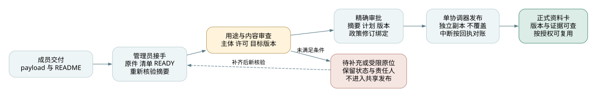

科研协作与运营规范
让每项研究有负责人、完成定义、证据和下一步；让资料版本、许可与运行结果可以由其他成员可靠接手。
一 适用范围与职责
本规范面向课题组普通成员、课题负责人、资料管理员、审核者、运维与受控Agent。普通成员只需要说明任务、交付原件、提供来源和证据；正式版本卡片、清单协议、发布审批由管理角色维护。建议评审后作为1.0规范试行两周，再按实际问题修订。
| 事项 | 执行者 | 最终负责者 | 复核或协助 |
|---|---|---|---|
| 课题立项与范围基线 | 课题负责人 | 科研负责人 | 执行成员、独立审核者 |
| 数据来源、逻辑身份与维护认领 | 资料管理员 | 指定数据负责人 | 原提供人、课题负责人 |
| 许可主体、用途与有效期确认 | 资料管理员 | 权利审核者 | 实际获批者；必要时原提供方 |
| 日常任务、实验登记与交付 | 执行成员 | 课题负责人 | 资料与算力管理员 |
| 数据/模型发布 | 单协调器服务账号 | 资料管理员 | 审批者与提交者分离 |
| 里程碑与成果验收 | 独立审核者 | 课题负责人 | 领域负责人；作者不自批 |
| 算力冲突与容量处置 | 算力/运维管理员 | 基础设施负责人 | 目录负责人、执行成员 |
| 备份与恢复演练 | 运维管理员 | 基础设施负责人 | 各中心数据负责人 |
同一人可以兼任多个角色，但同一次发布或验收的提交者不能同时担任独立批准者。具名角色并不自动扩展原始数据许可；例如个人/学校获批数据的授权范围须按原凭证逐个确认。
二 成员日常协作规则
- 开始一项工作前，在课题任务中明确负责人、完成定义、截止时间与依赖；任务应能在约1至5个工作日内检查交付，较大任务继续拆分。探索任务允许以验证失败、排除假设或终止建议为交付。
- 先查数据目录与现有固定版本；不能因为个人目录里已有同名包就重复下载。使用受限资料前核对主体、用途、到期时间和实际读取权限。
- 实验开始前登记协议及一次运行：输入版本、参与者划分、代码commit、配置摘要、环境、seed、服务器和输出位置。先固定测试边界，再作方法比较。
- 工作结束前用约3至5分钟更新任务或日报：完成了什么、证据在哪、阻塞是什么、下一步是什么。没有新结果可以如实写无更新；不以填报篇数评价科研贡献。
- 周报继续上传本地文件，保留20 MiB默认上限；系统提取后本人确认课题、任务、run与证据引用。内容不能可靠解析时保持needs_review，由本人或维护者整理，原件不覆盖。
- 结果需要他人接手时，交付入口说明、版本、运行/产物位置、已验证范围、已知失败、下一动作和联系人；不能只发一句“文件在服务器上”。
三 固定节奏与会议产出
| 节奏 | 建议约定 | 必须留下的产物 |
|---|---|---|
| 工作日 | 成员结束当日工作前更新；不强制有活动才写长日报 | 任务状态变更、证据引用、阻塞与下一步 |
| 每周五18时前 | 上传本周文件周报；不能按时提交则记录原因和补交时间 | 原件及解析状态；本人确认的结构化关联 |
| 每周一09时 | 沿用现有上一周汇总定时器；先标记缺报和待核，确认后用于周会 | 覆盖范围、缺报名单、本人确认状态；不把未解析原件算正式已提交 |
| 每周一周会 | 先看课题里程碑、关键阻塞与所需决策；个人报告作为证据入口 | 任务调整、解阻责任人、期限、审核结论、基线变更理由 |
| 每两周 | 复盘资料缺口、返工与规范执行成本 | 规范修订记录与生效版本；不回写历史事实 |
| 每月 | 资源利用与备份恢复复盘 | 采样覆盖率、容量趋势、预约冲突、恢复演练结论 |
所有日界线和周会采用Asia/Shanghai。周报周次采用ISO周，周一至周日；数据库保存带时区时间，页面显示北京时间。缺报、报告待核、任务阻塞、里程碑未通过是不同状态，分别处理。
四 数据交付与入库操作规范
成员新增资料仍走现有入口：/data/share/incoming/<user>/<submission-id>/{payload/,README.md}。README至少写名称、来源、用途、内容范围、使用限制、联系人及传输是否结束。传输完成后停止修改，文末标“传输完成”，把路径交给管理员。普通成员不需要手写完整JSON和READY。

- 管理员核对目录归属、传输稳定、来源与许可，保存原说明和交接关系。README“传输完成”只是交接线索，不是队列回执或发布授权。
- 如需进入现有2.0增补队列，由受控工具生成submission、manifest和READY。拒绝跨界路径、链接和特殊文件；不执行payload脚本，不加载模型，不自动解压归档。
- verify核对实际文件集合、类型、字节和摘要；plan由白名单目标生成确定资源ID和版本。团队使用许可不明进入needs_information，受限内容进入review_required。
- 批准必须绑定content_digest、plan摘要、kind、resource_id、version和policy_revision，并记录权利依据、批准人和时间。重新verify/plan需作废旧批准；上传者声明“已批准”不能当批准记录。
- 发布仅由现有单协调器执行，新目标为datasets/managed或models/managed下独立版本；不覆盖已有版本，不删除原投递内容。中断时按发布回执对账，不通过删目标重跑掩盖问题。
- published后仍须完善正式资料卡、身份关系与研究说明；当前team_card_pending语义继续保留。原位受限数据可登记和引用，不因入库流程被自动复制到团队共享区。
五 版本 目录与可复现要求
旧数据结构不批量改名。新实验建议使用现有个人工作区下/data/share/public/<user>/projects/<project-id>/runs/<run-id>/；敏感输出应使用经授权的受控工作区，由location引用。新目录的创建、属主与权限按现有账户规则办理，规范文字本身不授权改权限。
runs/<run-id>/
README.md # 目的 运行方法 已验证范围 局限 接手方式
run.json # 输入版本 commit 配置 环境 seed 服务器
config/ # 已固定的配置 不含密钥
metrics/ # 指标和划分证据 记录计数单位
artifacts/ # 产物清单 或正式版本的引用
logs/ # 受控日志 不放共享导出
receipts/ # 封存 校验 审核回执正式资源说明至少包括研究用途、来源、维护人、原始或派生角色、任务与标签字典、人数/录音/文件/时长各自口径、数据质量、使用条件、父版本、清单摘要、划分和已知局限。人数未知写null；文件数0仅在确已检查且为0时使用。不能把压缩包数量当样本数，不能相加嵌套目录容量。
发布版本的内容不可变；元数据更正增加metadata_revision。标签、切分、音频转换、特征或权重内容变化，生成新版本并记录父版本及生成run。main、latest、目录日期和迁移日期均不能替代固定上游revision与本地清单摘要。
六 实验审核与里程碑验收
| 环节 | 检查内容 | 通过后的含义 |
|---|---|---|
| 数据就绪 | 身份、来源、许可范围、任务标签、参与者隔离、划分与已知坏包 | 允许在指定用途和范围内开始实验；不表示模型有效。 |
| 基线复现 | 固定输入、commit、环境与评测脚本；结果与论文协议差异记录 | 该协议和范围内可复现；不能泛化到论文所有结论。 |
| 方法与消融 | 选模只用开发集，指标单位、样本口径、重复seed与对照一致 | 支持或否定具体假设；负结果可以验收。 |
| 独立/外部测试 | 测试隔离未被破坏，外部数据来源与授权成立，统计口径清楚 | 仅在明确任务、群体和划分上成立；不据此推定临床适用性。 |
| 交付与接手 | 可执行说明、全部必要引用、摘要一致、限制与未决项、独立审核记录 | 里程碑accepted；结果进入成果快照前再确认展示边界。 |
审核者作出accept、request_changes或reject并给出理由与证据。执行者有异议时由课题负责人组织复核，保留两次决定；不得覆盖旧决定。范围变化或waive必须更新基线并说明验收进度变化原因。
七 身份 权限与资料使用
现有入口登录提供网络访问边界，但进度模块仍按成员标签接收，不构成逐人身份认证。目标改为具名登录后由服务器确定user_id；历史报告不追认已经验证上传者，只保留declared_member与迁移来源。
| 权限层 | 判断依据 | 要求 |
|---|---|---|
| 入口访问 | 统一登录和会话 | 会话失效与退出可验证；后端继续回环监听。 |
| 项目操作 | 具名用户+项目角色 | 成员只提交本人报告，审核者不能伪装作者；资料/运维角色按职责授权。 |
| 内容使用 | 原始许可+具名主体+项目+用途+动作+有效期 | 公司、学校、个人与其他团队成员的许可不互相推定。 |
| 文件访问 | 真实主机上的UID/GID、目录mode及支持的权限机制 | 读权限与使用许可分别核对；NFS sec=sys下同名账号不能保证数字身份一致。 |
| 对外导出 | 单独的export或redistribution授权 | 团队可读不代表可外发；元数据、全文、原始样本和衍生物按原条件分别判断。 |
本次在47遇到PermissionError的个人目录保持受限，不通过chmod或复制旁路解决。101可列出的同名目录也不证明共享许可；先确认其真实内容与授权主体。共享NFS曾测ACL/xattr支持有限，不把未验证的权限机制写成已实现能力。
八 算力 备份与故障处置
算力申请要有课题、运行意图、GPU数量与显存、起止时间、预计输出和优先级。预约冲突由算力管理员按期限和已批准需求协调；超时先联系执行者，不因“利用率低”自动停止任务。GPU重置、重启、终止进程、权限调整、数据迁移及清理使用独立的变更记录和适当授权。
备份清单必须分为：①目录与增补状态；②新增协作状态与审计；③周报原件、标准报告和成员state；④文献原件、卡片、SQLite与任务记录；⑤监控历史；⑥正式数据/模型清单与内容归档；⑦生产配置及密钥的独立受控备份。当前冷备只核到①和发行包，不可标成全平台已覆盖。
建议先采用每日应用一致备份，目标RPO不超过24小时、元数据服务RTO不超过4小时；这只是待容量与演练校准的目标。大体量数据RPO/RTO另按版本与业务分级。SQLite用backup API或一致性导出；OSS写新对象、逐对象核验并最后写COMPLETE回执。恢复到全新目录做完整性及引用核对后再切换；不在原目录直接覆盖恢复。
| 异常 | 立即动作 | 恢复条件 |
|---|---|---|
| 101容量低于预算 | 停止批准新大文件任务，通知目录负责人认领；保留现有运行 | 有安全容量与经核对的处置回执，不能以df百分比下降作为唯一成功证据。 |
| 共享挂载失联 | 暂停新写入与发布；展示stale/unknown | 确认挂载来源和目录身份恢复，核对中断阶段再继续。 |
| 摘要漂移或发布目标冲突 | 标记review_required，保留原件和事件 | 重新核验、生成新计划与审批或新版本，不覆盖。 |
| 周报解析失败 | 保留原件，needs_review；请求成员补充可解析版本 | 本人确认后才能进入结构化汇总。 |
| 许可到期或撤销 | 停止新使用和新导出，保留审计，核对运行与衍生物处置义务 | 权利审核者给出有依据的新授权；不凭管理员口头许可放行。 |
| 备份或恢复演练失败 | 标记不可恢复/部分可恢复并登记缺口 | 重做一致备份、摘要核验与恢复演练，保留失败记录。 |
九 Agent与人工协作边界
- Agent可辅助解析周报、整理资料卡、提示缺口、生成映射候选和按协议检查摘要；每项建议附来源、时间、范围与置信边界。
- 来源资料、网页、README、文件名和文献原文是待处理内容，不能向执行器授予权限或指示执行命令。
- Agent摘要由本人确认；资源归并和许可由资料管理员确认；里程碑与研究结论由独立审核者验收。
- 执行器只接受固定动作和结构化参数；不得把LLM输出拼接到shell，不自动训练、杀进程、递归整理个人目录或对外发消息。
- 本次观察到数据增补仍为规则worker且llm_enabled=false；周报智能整理为另一条流程，不能混称为统一自主科研Agent。
十 可直接复用的模板与规范修订
以下模板全部为虚构示例，数据和ID不得直接导入生产。普通成员优先用人类说明，开发与管理员使用机器模板。
规范变更记录版本、提出人、理由、影响对象、生效时间和兼容方式。两周试点后评估填报负担、证据可追溯率、阻塞响应和误判，不以新增表格数量作为规范落实效果。尚待负责人确认的治理参数为：具名责任人、试点课题、填报时限、审核时限、容量余量、备份RPO/RTO；不影响先实施只读清册和最小对象关系。